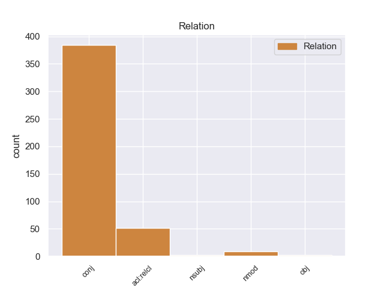
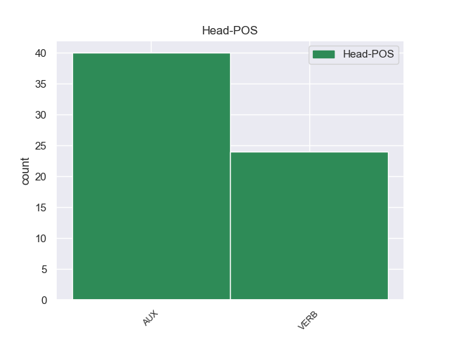
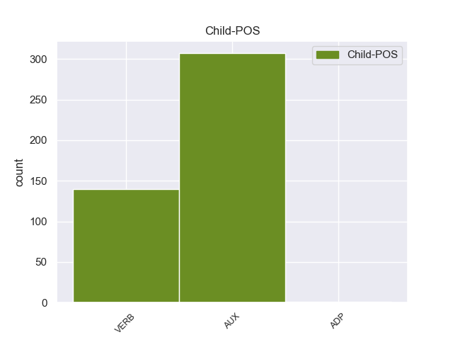

Distribution of features within this leaf



Agreement Rules sorted by frequency.
- When the dependent token is the adverbial clause modifier(advcl) of the head token, and the head token is AUX
1 ७० _ _ _ _ 0 _ _ _
2 वर्षीय _ _ _ _ 0 _ _ _
3 इस _ _ _ _ 0 _ _ _
4 अहिंसावादी _ _ _ _ 0 _ _ _
5 तिब्बती _ _ _ _ 0 _ _ _
6 नेता _ _ _ _ 0 _ _ _
7 ने _ _ _ _ 0 _ _ _
8 यह _ _ _ _ 0 _ _ _
9 भी _ _ _ _ 0 _ _ _
10 कहा _ _ _ _ 0 _ _ _
11 कि _ _ _ _ 0 _ _ _
12 वे _ _ _ _ 0 _ _ _
13 चीन _ _ _ _ 0 _ _ _
14 से _ _ _ _ 0 _ _ _
15 अलगाव _ _ _ _ 0 _ _ _
16 की _ _ _ _ 0 _ _ _
17 बात _ _ _ _ 0 _ _ _
18 नहीं _ _ _ _ 0 _ _ _
19 कर _ _ _ _ 0 _ _ _
20 रहे _ _ _ _ 0 _ _ _
21 हैं है AUX VAUX Mood=Ind|Number=Sing|Person=3|Polite=Form|Tense=Pres|VerbForm=Fin 0 _ _ _
22 बल्कि _ _ _ _ 0 _ _ _
23 वे _ _ _ _ 0 _ _ _
24 तो _ _ _ _ 0 _ _ _
25 चीनी _ _ _ _ 0 _ _ _
26 संविधान _ _ _ _ 0 _ _ _
27 के _ _ _ _ 0 _ _ _
28 दायरे _ _ _ _ 0 _ _ _
29 में _ _ _ _ 0 _ _ _
30 ही _ _ _ _ 0 _ _ _
31 तिब्बत _ _ _ _ 0 _ _ _
32 समस्या _ _ _ _ 0 _ _ _
33 का _ _ _ _ 0 _ _ _
34 हल _ _ _ _ 0 _ _ _
35 चाहते _ _ _ _ 0 _ _ _
36 हैं है AUX VAUX Mood=Ind|Number=Sing|Person=3|Polite=Form|Tense=Pres|VerbForm=Fin 21 advcl _ ChunkId=VGF3|ChunkType=child|Tam=hE|Translit=haiṁ|Vib=है
37 । _ _ _ _ 0 _ _ _
1 सरकार _ _ _ _ 0 _ _ _
2 इस _ _ _ _ 0 _ _ _
3 प्रयास _ _ _ _ 0 _ _ _
4 में _ _ _ _ 0 _ _ _
5 तेजी _ _ _ _ 0 _ _ _
6 लाए ला VERB VM Mood=Sub|Number=Sing|Person=3|VerbForm=Fin|Voice=Act 0 _ _ _
7 ताकि _ _ _ _ 0 _ _ _
8 समस्या _ _ _ _ 0 _ _ _
9 का _ _ _ _ 0 _ _ _
10 शीघ्र _ _ _ _ 0 _ _ _
11 निपटारा _ _ _ _ 0 _ _ _
12 हो _ _ _ _ 0 _ _ _
13 सके सक AUX VAUX Mood=Sub|Number=Sing|Person=3|VerbForm=Fin 6 advcl _ ChunkId=VGF2|ChunkType=child|Tam=eM|Translit=sake|Vib=एं
14 । _ _ _ _ 0 _ _ _
1 लेकिन _ _ _ _ 0 _ _ _
2 इलाहाबाद _ _ _ _ 0 _ _ _
3 विश्वविद्यालय _ _ _ _ 0 _ _ _
4 को _ _ _ _ 0 _ _ _
5 केंद्रीय _ _ _ _ 0 _ _ _
6 दर्जा _ _ _ _ 0 _ _ _
7 मिलने _ _ _ _ 0 _ _ _
8 की _ _ _ _ 0 _ _ _
9 स्थिति _ _ _ _ 0 _ _ _
10 में _ _ _ _ 0 _ _ _
11 उससे _ _ _ _ 0 _ _ _
12 संबद्ध _ _ _ _ 0 _ _ _
13 कॉलेजों _ _ _ _ 0 _ _ _
14 की _ _ _ _ 0 _ _ _
15 स्थिति _ _ _ _ 0 _ _ _
16 क्या _ _ _ _ 0 _ _ _
17 होगी हो VERB VM Gender=Fem|Mood=Ind|Number=Sing|Person=3|Tense=Fut|VerbForm=Fin|Voice=Act 0 _ _ _
18 , _ _ _ _ 0 _ _ _
19 यह _ _ _ _ 0 _ _ _
20 अभी _ _ _ _ 0 _ _ _
21 साफ _ _ _ _ 0 _ _ _
22 नहीं _ _ _ _ 0 _ _ _
23 है है AUX VM Mood=Ind|Number=Sing|Person=3|Tense=Pres|VerbForm=Fin|Voice=Act 17 obl _ ChunkId=VGF2|ChunkType=head|Stype=declarative|Tam=hE|Translit=hai|Vib=है
24 । _ _ _ _ 0 _ _ _
1 जहां _ _ _ _ 0 _ _ _
2 तक _ _ _ _ 0 _ _ _
3 इन _ _ _ _ 0 _ _ _
4 उपकरणों _ _ _ _ 0 _ _ _
5 की _ _ _ _ 0 _ _ _
6 कीमत _ _ _ _ 0 _ _ _
7 की _ _ _ _ 0 _ _ _
8 बात _ _ _ _ 0 _ _ _
9 है है AUX VM Mood=Ind|Number=Sing|Person=3|Tense=Pres|VerbForm=Fin|Voice=Act 24 obl _ ChunkId=VGF|ChunkType=head|Stype=declarative|Tam=hE|Translit=hai|Vib=है
10 तो _ _ _ _ 0 _ _ _
11 ये _ _ _ _ 0 _ _ _
12 आकार _ _ _ _ 0 _ _ _
13 के _ _ _ _ 0 _ _ _
14 अनुसार _ _ _ _ 0 _ _ _
15 350 _ _ _ _ 0 _ _ _
16 से _ _ _ _ 0 _ _ _
17 लेकर _ _ _ _ 0 _ _ _
18 2000 _ _ _ _ 0 _ _ _
19 रुपये _ _ _ _ 0 _ _ _
20 तक _ _ _ _ 0 _ _ _
21 में _ _ _ _ 0 _ _ _
22 उपलब्ध _ _ _ _ 0 _ _ _
23 होते _ _ _ _ 0 _ _ _
24 हैं है AUX VAUX Mood=Ind|Number=Plur|Person=3|Tense=Pres|VerbForm=Fin 0 _ _ _
25 । _ _ _ _ 0 _ _ _
1 अन्नान _ _ _ _ 0 _ _ _
2 से _ _ _ _ 0 _ _ _
3 विदेश _ _ _ _ 0 _ _ _
4 मंत्री _ _ _ _ 0 _ _ _
5 के _ _ _ _ 0 _ _ _
6 बयान _ _ _ _ 0 _ _ _
7 पर _ _ _ _ 0 _ _ _
8 प्रतिक्रिया _ _ _ _ 0 _ _ _
9 मांगी मांग VERB VM Gender=Fem|Mood=Ind|Number=Sing|Tense=Fut|VerbForm=Fin|Voice=Act 11 aux:pass _ ChunkId=VGF|ChunkType=head|Stype=declarative|Tam=gA|Translit=māṁgī|Vib=गा_जा+या१_था
10 गई _ _ _ _ 0 _ _ _
11 थी था AUX VAUX Gender=Fem|Mood=Ind|Number=Sing|Tense=Past|VerbForm=Fin 0 _ _ _
12 । _ _ _ _ 0 _ _ _
1 इस _ _ _ _ 0 _ _ _
2 मामले _ _ _ _ 0 _ _ _
3 में _ _ _ _ 0 _ _ _
4 क्या _ _ _ _ 0 _ _ _
5 कार्रवाई _ _ _ _ 0 _ _ _
6 होगी हो VERB VM Gender=Fem|Mood=Ind|Number=Sing|Person=3|Tense=Fut|VerbForm=Fin|Voice=Act 0 _ _ _
7 यह _ _ _ _ 0 _ _ _
8 बात _ _ _ _ 0 _ _ _
9 गुजरात _ _ _ _ 0 _ _ _
10 हाईकोर्ट _ _ _ _ 0 _ _ _
11 की _ _ _ _ 0 _ _ _
12 बृहस्पतिवार _ _ _ _ 0 _ _ _
13 को _ _ _ _ 0 _ _ _
14 होने _ _ _ _ 0 _ _ _
15 वाली _ _ _ _ 0 _ _ _
16 सुनवाई _ _ _ _ 0 _ _ _
17 के _ _ _ _ 0 _ _ _
18 बाद _ _ _ _ 0 _ _ _
19 ही _ _ _ _ 0 _ _ _
20 सामने _ _ _ _ 0 _ _ _
21 आ _ _ _ _ 0 _ _ _
22 पाएगी पा AUX VAUX Gender=Fem|Mood=Ind|Number=Sing|Person=3|Tense=Fut|VerbForm=Fin 6 xcomp _ ChunkId=VGF2|ChunkType=child|Tam=gA|Translit=pāegī|Vib=गा
23 । _ _ _ _ 0 _ _ _
Disagree Examples:
1 ओरलैंडो _ _ _ _ 0 _ _ _
2 को _ _ _ _ 0 _ _ _
3 बच्चों _ _ _ _ 0 _ _ _
4 का _ _ _ _ 0 _ _ _
5 स्वर्ग _ _ _ _ 0 _ _ _
6 कहा _ _ _ _ 0 _ _ _
7 जाए जा AUX VAUX Mood=Sub|Number=Sing|Person=3|VerbForm=Fin 11 advcl _ ChunkId=VGF|ChunkType=child|Tam=eM|Translit=jāe|Vib=एं
8 तो _ _ _ _ 0 _ _ _
9 गलत _ _ _ _ 0 _ _ _
10 न _ _ _ _ 0 _ _ _
11 होगा हो VERB VM Gender=Masc|Mood=Ind|Number=Sing|Person=3|Tense=Fut|VerbForm=Fin|Voice=Act 0 _ _ _
12 । _ _ _ _ 0 _ _ _
1 आप _ _ _ _ 0 _ _ _
2 यहाँ _ _ _ _ 0 _ _ _
3 जाने _ _ _ _ 0 _ _ _
4 से _ _ _ _ 0 _ _ _
5 पहले _ _ _ _ 0 _ _ _
6 होटल _ _ _ _ 0 _ _ _
7 की _ _ _ _ 0 _ _ _
8 ऑनलाइन _ _ _ _ 0 _ _ _
9 बुकिंग _ _ _ _ 0 _ _ _
10 कर _ _ _ _ 0 _ _ _
11 लें ले AUX VAUX Mood=Sub|Number=Sing|Person=2|Polite=Form|VerbForm=Fin 14 advcl _ ChunkId=VGF|ChunkType=child|Tam=eM|Translit=leṁ|Vib=एं
12 तो _ _ _ _ 0 _ _ _
13 बेहतर _ _ _ _ 0 _ _ _
14 होगा हो VERB VM Gender=Masc|Mood=Ind|Number=Sing|Person=3|Tense=Fut|VerbForm=Fin|Voice=Act 0 _ _ _
15 । _ _ _ _ 0 _ _ _
1 पैरों _ _ _ _ 0 _ _ _
2 में _ _ _ _ 0 _ _ _
3 डिजाइनर _ _ _ _ 0 _ _ _
4 चप्पलों _ _ _ _ 0 _ _ _
5 या _ _ _ _ 0 _ _ _
6 सैंडल _ _ _ _ 0 _ _ _
7 की _ _ _ _ 0 _ _ _
8 बजाए _ _ _ _ 0 _ _ _
9 स्पोर्टस _ _ _ _ 0 _ _ _
10 शू _ _ _ _ 0 _ _ _
11 पहनें पहन VERB VM Mood=Sub|VerbForm=Fin|Voice=Act 17 advcl _ ChunkId=VGF|ChunkType=head|Stype=declarative|Tam=eM|Translit=pahaneṁ|Vib=एं
12 तो _ _ _ _ 0 _ _ _
13 चढ़ाई _ _ _ _ 0 _ _ _
14 करने _ _ _ _ 0 _ _ _
15 में _ _ _ _ 0 _ _ _
16 आसानी _ _ _ _ 0 _ _ _
17 रहेगी रह VERB VM Gender=Fem|Mood=Ind|Number=Sing|Person=3|Tense=Fut|VerbForm=Fin|Voice=Act 0 _ _ _
18 । _ _ _ _ 0 _ _ _
1 बताया _ _ _ _ 0 _ _ _
2 गया _ _ _ _ 0 _ _ _
3 है _ _ _ _ 0 _ _ _
4 कि _ _ _ _ 0 _ _ _
5 राज _ _ _ _ 0 _ _ _
6 ने _ _ _ _ 0 _ _ _
7 अप्रत्यक्ष _ _ _ _ 0 _ _ _
8 रूप _ _ _ _ 0 _ _ _
9 से _ _ _ _ 0 _ _ _
10 उद्धव _ _ _ _ 0 _ _ _
11 की _ _ _ _ 0 _ _ _
12 ओर _ _ _ _ 0 _ _ _
13 इशारा _ _ _ _ 0 _ _ _
14 करते _ _ _ _ 0 _ _ _
15 हुए हो AUX VAUX Gender=Masc|Mood=Sub|Number=Sing|VerbForm=Fin 29 advcl _ ChunkId=VGNF|ChunkType=child|Tam=eM|Translit=hue|Vib=एं
16 सेना _ _ _ _ 0 _ _ _
17 प्रमुख _ _ _ _ 0 _ _ _
18 से _ _ _ _ 0 _ _ _
19 उन्हें _ _ _ _ 0 _ _ _
20 और _ _ _ _ 0 _ _ _
21 उनके _ _ _ _ 0 _ _ _
22 समर्थकों _ _ _ _ 0 _ _ _
23 की _ _ _ _ 0 _ _ _
24 अनदेखी _ _ _ _ 0 _ _ _
25 होने _ _ _ _ 0 _ _ _
26 की _ _ _ _ 0 _ _ _
27 शिकायत _ _ _ _ 0 _ _ _
28 की _ _ _ _ 0 _ _ _
29 है है AUX VAUX Mood=Ind|Number=Sing|Person=3|Tense=Pres|VerbForm=Fin 0 _ _ _
30 । _ _ _ _ 0 _ _ _
1 राष्ट्रीय _ _ _ _ 0 _ _ _
2 महिला _ _ _ _ 0 _ _ _
3 आयोग _ _ _ _ 0 _ _ _
4 को _ _ _ _ 0 _ _ _
5 मिलने _ _ _ _ 0 _ _ _
6 वाली _ _ _ _ 0 _ _ _
7 शिकायतों _ _ _ _ 0 _ _ _
8 पर _ _ _ _ 0 _ _ _
9 यकीन _ _ _ _ 0 _ _ _
10 करें कर VERB VM Mood=Sub|Number=Plur|Person=3|VerbForm=Fin|Voice=Act 0 _ _ _
11 तो _ _ _ _ 0 _ _ _
12 मध्यप्रदेश _ _ _ _ 0 _ _ _
13 के _ _ _ _ 0 _ _ _
14 मुख्यमंत्री _ _ _ _ 0 _ _ _
15 बाबूलाल _ _ _ _ 0 _ _ _
16 गौर _ _ _ _ 0 _ _ _
17 पर _ _ _ _ 0 _ _ _
18 केवल _ _ _ _ 0 _ _ _
19 दो _ _ _ _ 0 _ _ _
20 सगी _ _ _ _ 0 _ _ _
21 बहनों _ _ _ _ 0 _ _ _
22 के _ _ _ _ 0 _ _ _
23 यौन _ _ _ _ 0 _ _ _
24 उत्पीड़न _ _ _ _ 0 _ _ _
25 का _ _ _ _ 0 _ _ _
26 आरोप _ _ _ _ 0 _ _ _
27 नहीं _ _ _ _ 0 _ _ _
28 है है AUX VM Mood=Ind|Number=Sing|Person=3|Tense=Pres|VerbForm=Fin|Voice=Act 10 obl _ ChunkId=VGF2|ChunkType=head|Stype=declarative|Tam=hE|Translit=hai|Vib=है
29 बल्कि _ _ _ _ 0 _ _ _
30 दिल्ली _ _ _ _ 0 _ _ _
31 में _ _ _ _ 0 _ _ _
32 भी _ _ _ _ 0 _ _ _
33 उनकी _ _ _ _ 0 _ _ _
34 सताई _ _ _ _ 0 _ _ _
35 हुई _ _ _ _ 0 _ _ _
36 महिलाओं _ _ _ _ 0 _ _ _
37 की _ _ _ _ 0 _ _ _
38 तादाद _ _ _ _ 0 _ _ _
39 कम _ _ _ _ 0 _ _ _
40 नहीं _ _ _ _ 0 _ _ _
41 है _ _ _ _ 0 _ _ _
42 । _ _ _ _ 0 _ _ _